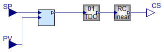
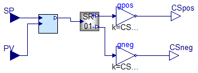
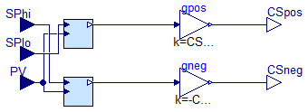

Package Content

Information
Extends from Controllers.Blocks.Analogue.BaseClasses.A_SISO_base.
Parameters
| Type | Name | Default | Description |
|---|
| Real | K | 1 | Gain |
| Time | Ti | 1 | Integral time [s] |
| Real | CSmax | 1 | Max CS |
| Real | CSmin | 0 | Min CS |
| Real | CSstart | 0 | Initial CS |
| Time | Ttdo | 1 | TDO timebase [s] |
Connectors
Modelica definition
model PI_TDO
extends Controllers.Blocks.Analogue.BaseClasses.A_SISO_base;
Blocks.Analogue.AWPI_1dof PI(K = K, Ti = Ti, CSmax = 1, CSmin = 0, CSstart = (CSstart - CSmin) / (CSmax - CSmin));
Actuation.TDO TDO(Ttdo = Ttdo);
parameter Real K = 1 ;
parameter Time Ti = 1 ;
parameter Real CSmax = 1 ;
parameter Real CSmin = 0 ;
parameter Real CSstart = 0 ;
parameter Time Ttdo = 1 ;
Actuation.RangeConv_Linear RCo(CSimin = 0, CSimax = 1, CSomin = CSmin, CSomax = CSmax);
equation
connect(PI.CS, TDO.cmd01);
connect(PV, PI.PV);
connect(SP, PI.SP);
connect(TDO.TDO, RCo.CSi);
connect(RCo.CSo, CS);
end PI_TDO;

Parameters
| Type | Name | Default | Description |
|---|
| Real | DeadZoneNorm | 0.1 | Normalised DZ (0-1) |
| Real | K | 1 | Gain |
| Time | Ti | 1 | Integral time [s] |
| Real | CSposmax | 1 | Max CS for pos action |
| Real | CSnegmax | 0 | Min CS for neg action |
| Real | CSstart | 0 | Initial CS |
Connectors
Modelica definition
model PI_SplitRange
Modelica.Blocks.Interfaces.RealInput SP;
Modelica.Blocks.Interfaces.RealInput PV;
Modelica.Blocks.Interfaces.RealOutput CSpos;
Modelica.Blocks.Interfaces.RealOutput CSneg;
Blocks.Analogue.AWPI_1dof PI(K = K, Ti = Ti, CSmax = 1, CSstart = (CSstart + CSnegmax) / (CSposmax + CSnegmax), CSmin = -1);
Actuation.SplitRange_01 splitRange_01_1(DeadZone = DeadZoneNorm);
parameter Real DeadZoneNorm = 0.1 ;
Modelica.Blocks.Math.Gain gpos(k = CSposmax);
Modelica.Blocks.Math.Gain gneg(k = CSnegmax);
parameter Real K = 1 ;
parameter Time Ti = 1 ;
parameter Real CSposmax = 1 ;
parameter Real CSnegmax = 0 ;
parameter Real CSstart = 0 ;
equation
connect(SP, PI.SP);
connect(PV, PI.PV);
connect(PI.CS, splitRange_01_1.CSi01);
connect(splitRange_01_1.CSo01_pos, gpos.u);
connect(gpos.y, CSpos);
connect(splitRange_01_1.CSo01_neg, gneg.u);
connect(gneg.y, CSneg);
end PI_SplitRange;

Parameters
| Type | Name | Default | Description |
|---|
| Real | DeadZoneNorm | 0.1 | Normalised DZ (0-1) |
| Real | Khi | 1 | Gain, hi |
| Time | Tihi | 1 | Integral time, hi [s] |
| Real | Klo | 1 | Gain, lo |
| Time | Tilo | 1 | Integral time, lo [s] |
| Real | CSposmax | 1 | Max CS for pos action |
| Real | CSnegmax | 0 | Min CS for neg action |
| Real | CSstart | 0 | Initial CS |
Connectors
Modelica definition
model TwinPI_RangeSP
Modelica.Blocks.Interfaces.RealInput SPhi;
Modelica.Blocks.Interfaces.RealInput PV;
Modelica.Blocks.Interfaces.RealOutput CSpos;
Modelica.Blocks.Interfaces.RealOutput CSneg;
Blocks.Analogue.AWPI_1dof PIhi(CSmin = 0, CSstart =
max(0, (CSstart + CSnegmax) / (CSposmax + CSnegmax)), K = Khi, Ti = Tihi, CSmax = 1);
parameter Real DeadZoneNorm = 0.1 ;
Modelica.Blocks.Math.Gain gpos(k = CSposmax);
Modelica.Blocks.Math.Gain gneg(k = -CSnegmax);
Modelica.Blocks.Interfaces.RealInput SPlo;
Blocks.Analogue.AWPI_1dof PIlo(Ti = Tilo, CSmax = 0, CSmin = -1, CSstart =
min(0, (CSstart + CSnegmax) / (CSposmax + CSnegmax)), K = Klo);
parameter Real Khi = 1 ;
parameter Time Tihi = 1 ;
parameter Real Klo = 1 ;
parameter Time Tilo = 1 ;
parameter Real CSposmax = 1 ;
parameter Real CSnegmax = 0 ;
parameter Real CSstart = 0 ;
equation
connect(gpos.y, CSpos);
connect(gneg.y, CSneg);
connect(PV, PIhi.PV);
connect(PV, PIlo.PV);
connect(PIhi.CS, gpos.u);
connect(PIlo.CS, gneg.u);
connect(SPhi, PIlo.SP);
connect(SPlo, PIhi.SP);
end TwinPI_RangeSP;
Automatically generated Mon Jun 1 16:09:56 2020.
 EEB.Controllers.AggregateBlocks.Analogue.PI_TDO
EEB.Controllers.AggregateBlocks.Analogue.PI_TDO